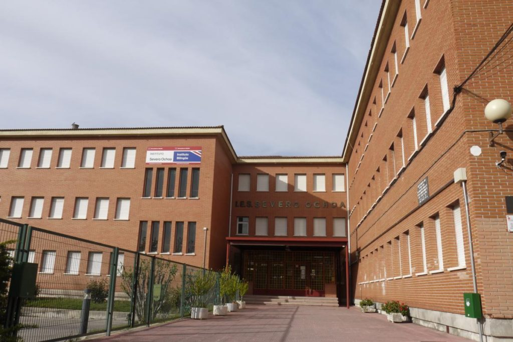

FORMACIÓN ACADÉMICA.
Bachillerato Ciencias Sociales.
Cursé bachillerato en Ciencias Sociales donde descubrí mi interés por la economía, la empresa y el marketing.
Ver centro
FP Supeiror en Marketing y Publicidad.
Máster en Marketing Digital.
Me especialice en marketing digital, branding y creación de contenido visual, desarrollando proyectos estratégicos y creativos.
Ver centro
Idiomas.
Español
Nativo
Inglés
B1 · Academia privada